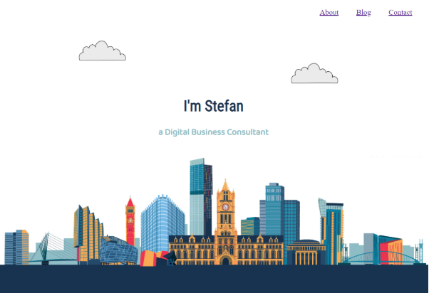
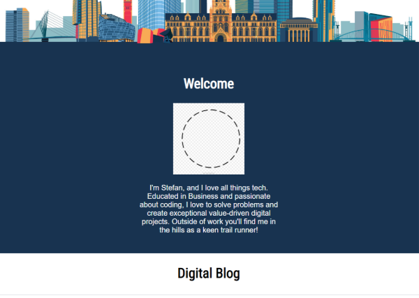
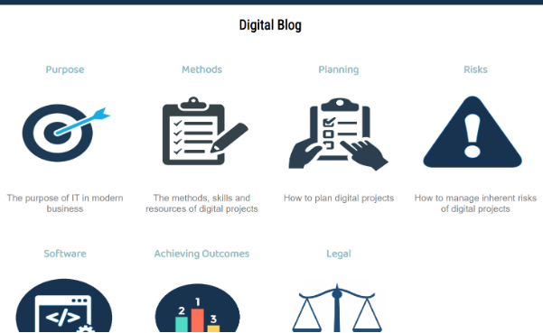
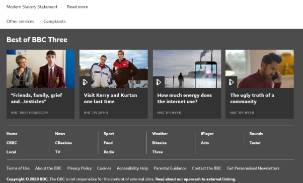
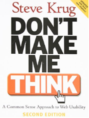

The homepage is the vast majority of websites is the most important page. It is your shop front, the first thing people see when learning about you or your business. Therefore special attention needs to be spent on the homepage.
The navigation bar needs to be adjusted so there is no underline beneath the titles, and the font needs to be changed from the Times Roman it is presently in. There could also be more of a prompt to scroll down the page - maybe a subtle downwards arrow. I think the page has balance with plain white-space juxtaposed with the colourful cityscape.
Even though the cityscape is colourful, the colours are relatively bland - there are no illuminous colours such as bright yellows or pinks. When viewing such colours on a mobile phone or computer screen, it can induce fatigue. Images which are alarming or websites which are cluttered can have a detrimental effect of the end user’s experience. We want the end user to enjoy their experience of using a website.
Scrolling down there is another section which is not fully complete as there is a missing cartoon portrait I wanted to create and include.
I took the dark navy-blue base of the cityscape image, and used this as my background for the ‘Welcome’ section. This is to promote a seamless feel to the site moving from one viewable area of a page to another. This is a little like how film directors move seamlessly from scene to scene in a film without a sharp jolt in the change of a scene. As with films and is the case with websites, we want the user to be mesmerised by the site.
The image will be circular and have a white background to compliment the navy blue background. The blurb beneath the picture needs to be spaced out more. I could achieve this by adding some kind of line spacing in the text.
Next is the digital blog section which contains icon links to the other pages on the site with the blog posts.
This section contains seven blog posts. I have tried to maintain consistency in the style and colour of the icons to promote a professional and consistent look. The icons do need to be fixed in terms of the relative height and width. At present each blog post including any padding has been calculated to take up 25% of the screen width. This allows the page to be responsive so it can be comfortably viewed on tablets or mobile phones.
Finally there is the contact form and footer. The contact form still needs to be completed and is an integral part of the website. I foresee this as having a dark navy blue background with the contact form to be filled in being in white. This will continue the white-navy blue-white-navy blue theme of the site.
The footer will be very basic and include the copyright info. Websites with a lot of content such as the bbc.co.uk will have many links in their footer sections.
This is fine for a content heavy website such as the bbc.co.uk, but not necessary for my site which has limited content. There may be an argument to have the navigation bar links placed in the footer along with a site map so that people can instantly navigate to other pages at a click, rather than scrolling back up to the top of the page to use the navigation bar.
The other pages are blog posts. At present these pages are in a basic html format and need to have css styling introduced. Much of the homepage and its styling will need to be replicated to be consistent across the site. It would feel extremely odd if you navigated to another page, and the navigation bar was different. You would ask yourself “Why is the navigation bar different?”, and you don’t want the user to be asking themselves these questions.
In Steve Krug’s excellent book on website usability the central theme of the book is to not allow the end user to think, to ask questions such as why is this here or how do I open this document. As previously mentioned the experience need to be seamless, and we need to consider the cognition of a user to eliminate any potential interactions which prompt the user to ask ‘why?’